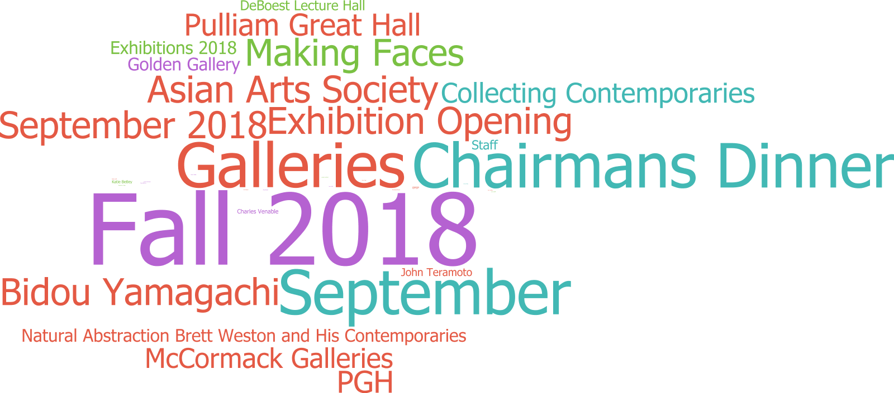

Newfields New Photography Report
New photography added to Piction in the week ending Friday, September 14, 2018
Collection Primary Images: 9
Collection Detail Images: 8
Non-Collection Images: 119
New Collections Primary Photography
| Accession Number | Title | Creator(s) | Date | Credit Line | Rights | Department | Upload Date |
|---|---|---|---|---|---|---|---|
| 1988.219 | Ruth Gleaning | Artist: Rogers, Randolph | American | 1825-1892 | modeled 1850, carved 1860 | Gift in honor of Mr. and Mrs. William L. Fortune by their children and Gift of the Alliance of the IMA | Public Domain | American Painting and Sculpture 1800-1945 | 12-Sep-2018 |
List of IRNs
New Non-Collection Photography

| Keyword | Number of Images |
|---|---|
| Fall 2018 | 101 |
| Chairmans Dinner | 63 |
| Galleries | 63 |
| September | 63 |
| Asian Arts Society | 38 |
| Bidou Yamagachi | 38 |
| Exhibition Opening | 38 |
| Making Faces | 38 |
| September 2018 | 38 |
| PGH | 31 |
| Pulliam Great Hall | 31 |
| Collecting Contemporaries | 28 |
| McCormack Galleries | 28 |
| Exhibitions 2018 | 18 |
| Golden Gallery | 18 |
| Natural Abstraction Brett Weston and His Contemporaries | 18 |
| DeBoest Lecture Hall | 14 |
| Staff | 13 |
| John Teramoto | 11 |
| Charles Venable | 6 |
| Katie Betley | 4 |
| EFEP | 3 |
| Ann Merkel | 1 |
| Curt Coffee | 1 |
| Dorit Paul | 1 |
| Gerald Paul | 1 |
| Greg Huffman | 1 |
| Joan Wolf | 1 |
| Josh Ratliff | 1 |
| June McCormack | 1 |
| Lynne Swinford | 1 |
| Marianne Tobias | 1 |
| Mike Merkel | 1 |
| Nilo Imami-Paydar | 1 |
| Robin Coffee | 1 |
| Walter Wolf | 1 |